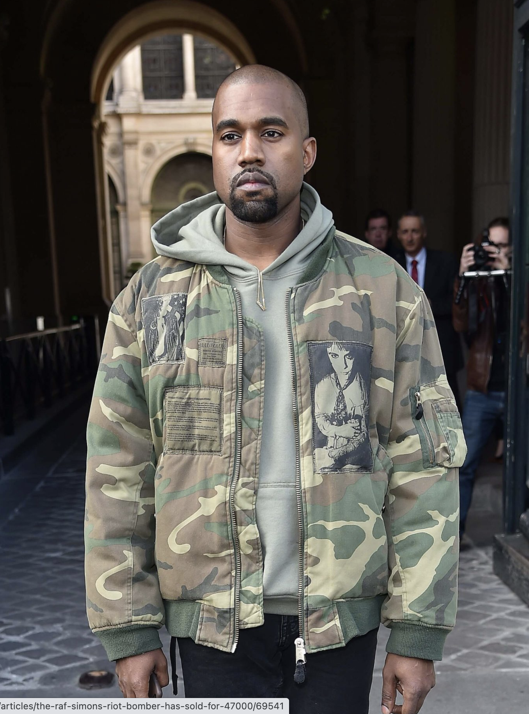

The rise of archival clothing has a lot to do with certain celebrities who have been seen sporting archive pieces. For example, Kanye West, the man who single-handedly made the ‘Riot! Riot! Riot! bomber from Raf Simons AW01’ sky-rocket to over 30K, because of one photo.
What people generally agreed on is that there are a few key designer brands which are like renowned labelled as archive brands. These ‘labelled’ archive brands include Helmut Lang (when Helmut Lang was still creative director), Raf Simons, Maison Margiela, Dries van Noten, some Jean-Paul Gaultier and Hedi Slimane, mostly his Dior designs. Most of the archive pieces from these brands are from the 90’s and early 00’s.
Brands like Comme Des Garçons, Issey Miyake and Yohji Yamamoto were the first wave of Japanese designers to show their collections on the runway in Paris, some of their pieces from that particular time are also considered ‘archive pieces’.